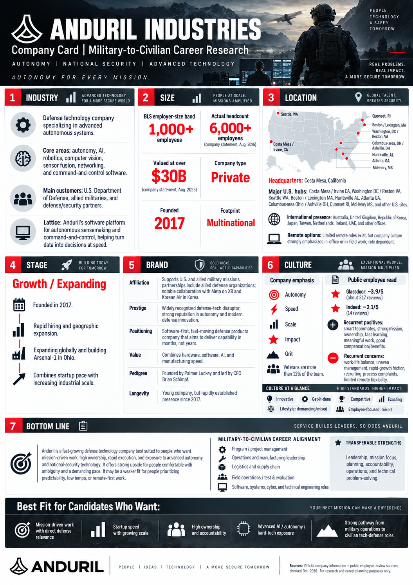

01 — COPY
Copy the research instructions
Select Copy Company Research Prompt above. All six company research areas, the separate Bottom Line & Best Fit conclusion, fact-checking rules, and culture descriptors are included.
A free AI research toolkit for U.S. service members preparing to transition into the civilian workforce. Learn what a company does, how it operates, and where your experience could fit.
No API key, signup, or payment required for this website. ChatGPT account and free-plan limits apply.
This website provides research instructions. ChatGPT conducts the research in your own account; nothing is submitted or saved on this site.
Select Copy Company Research Prompt above. All six company research areas, the separate Bottom Line & Best Fit conclusion, fact-checking rules, and culture descriptors are included.
Open ChatGPT, start a new chat, and paste the copied instructions. When asked, type the name of any company or business unit.
Review the cited research and the Company Research Card for accuracy. Download the resulting image when available, or save/print a PDF where supported.
This Anduril example illustrates the cinematic one-page design, six separately researched company areas, and the seventh Bottom Line & Best Fit conclusion. Select the image to open it at full size and zoom in.

Verification notice: This is AI-generated reference art, not an official Anduril document or verified company photography. Verify facts and visual labels independently.
Optional: attach the example to your ChatGPT conversation as a visual reference only. It must not be used as a factual source.
Every company is researched through six separate areas. This approach works across industries, including technology, finance, healthcare, energy, manufacturing, defense, and professional services.
What the business does: markets, products, services, customers, ownership, and industry conditions.
Verified headcount, BLS employer-size band, business-unit scale, revenue when disclosed, and geographic footprint.
Headquarters, U.S. employment cities, international operations, and verified remote or hybrid options.
Launch/Startup, Growth/Expanding, Shakeout/Stable, Mature, or Declining—supported by evidence.
Affiliation, prestige, positioning, value, pedigree, and longevity, based on verifiable information.
Independent employee feedback compared with company claims: strengths, concerns, and evidence-based culture descriptors.
Summarizes employer strengths and tradeoffs, identifies three to five relevant civilian career families, and highlights four to six evidence-based Best Fit for Candidates Who Want attributes.
AI outputs can contain mistakes. Verify cited sources, current employee data, and all infographic text before sharing. This resource evaluates companies—not specific jobs, salaries, or benefits. ChatGPT Free has feature and usage limits.